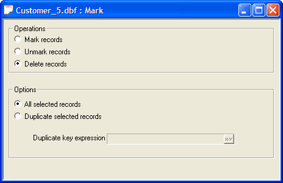
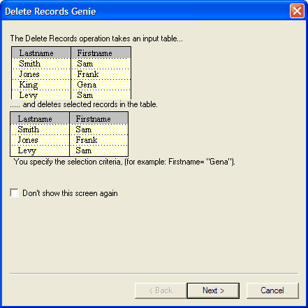
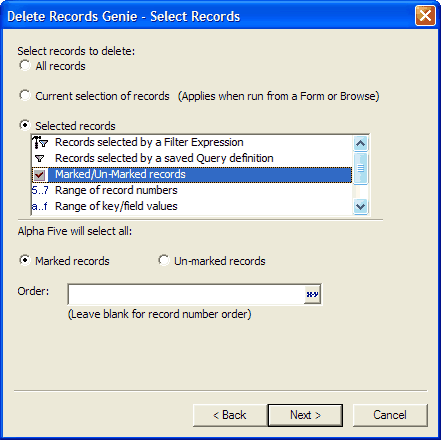
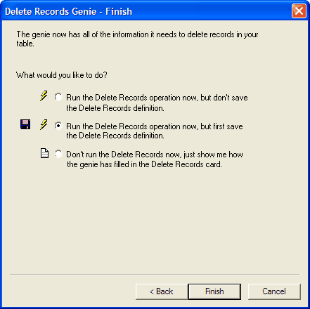

Mark, Unmark, and Delete Operations
The Mark/Delete Operation uses the criteria you specify to selectively mark, unmark, or delete records. You can use this operation to mark, unmark, or delete all of the records in the current range, or just the duplicate records in the current range.
For example, you have a table which stores club-membership information, and you want to compile a list of members who are no longer active in the organization.
Master Table
|
Member ID |
Name |
Active |
|
001 |
Adams |
T |
|
002 |
Brown |
F |
|
003 |
Chapman |
F |
|
004 |
Dent |
T |
|
005 |
Frakes |
T |
By setting the filter Active=.F., you can mark these records so that later on you can review or print them.
Master Table
|
|
Member ID |
Name |
Active |
|
|
001 |
Adams |
T |
|
002 |
Brown |
F | |
|
003 |
Chapman |
F | |
|
|
004 |
Dent |
T |
|
|
005 |
Frakes |
T |
( indicates that the record has been marked.)
When viewing records in a form or Browse, the status bar indicates marked records by displaying a check mark. When creating filter expressions, you can select just the marked records by using the expression MARKED(), and when using the Filter Card, you can select only marked records. Each method lets you print, view, or process only marked records.
Unmarkor_Delete_Operation>Performing a Mark, Unmark, or Delete Operation
Click the Operations tab on the Control Panel.
Click the New button. The Create New Operation dialog box appears.
Select "Mark", "Unmark", or "Delete" as the operation, and select the table you want to copy.
Click the Create button to display the Mark Card or click Create Using Genie to display the Mark Genie (see Using the Mark, Unmark, and Delete Genies ).

Selecting the Type of Mark Operation
Next select the records you want to include by selecting records, specifying a duplicate key expression, or both.
Duplicate Selected Records
If you want to select duplicate records, click the Duplicate selected records radio button, and specify a Duplicate key expression. For example, you want to select records which have duplicate Lastnames and Telephone numbers, you can use the expression Lastname+Telephone. The easiest way to enter the Duplicate key expression is by clicking
 to open the <span class=Screen>Expression Builder</span>.
to open the <span class=Screen>Expression Builder</span>.
Selecting Records
To select records click the
 button; the Select Records
dialog box appears. You can enter the Filter Expression
or Order Expression directly, or click use the <span class=Screen>Expression Builder</span> or <span class=Screen>Order Builder</span>.
button; the Select Records
dialog box appears. You can enter the Filter Expression
or Order Expression directly, or click use the <span class=Screen>Expression Builder</span> or <span class=Screen>Order Builder</span>.Click
 to run the operation.
to run the operation.

Select Records Dialog Box
Markand_Unmark_Genies>Using the Mark, Unmark, and Delete Genies
Click Next > to continue.

Indicate which records to delete, mark, or unmark.
If you clicked the Selected records radio button, make a selection from the list box.
Enter the filtering (a logical expression ) and ordering (a character expression ) criteria required by your choice.
Indicate whether you want to run the operation now, save the operation and then run it, or view the settings of the Export Builder.
Click Finish.

If you selected Run the Delete (Mark or Unmark) operation now, (but first save the definition for future use), the Save delete (mark or unmark) settings as... dialog box will appear.
Enter the name of the operation into the Name field and click OK.
If you selected Don't run the Delete (Mark or Unmark) operation now, just show me how the genie has filled in the Delete card, the Delete (Mark or Unmark) Card will appear.
Optionally, click Save to display the Save delete settings as... dialog box.
Enter the name of the operation into the Name field and click OK.
Optionally, click the Run button on the toolbar to run the operation.

See Also
Overview of Batch Operations, Duplicate Records Genie, ISBLANK(), Table Operation Methods